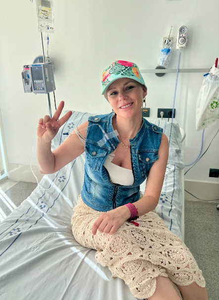
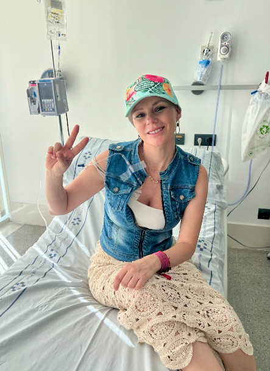

Mi historia, tu refugio.
Si estás leyendo esto, es probable que tu mundo, o el de alguien a quien quieres, se haya puesto patas arriba. Lo sé, yo también he estado ahí. Me llamo Yaiza, y Fórmula Triple Rosa nació de mi propia experiencia, de la soledad que sentí y de la necesidad de encontrar un lugar seguro.
Soy Yaiza Díaz, durante muchos años he sido presentadora de los informativos de Televisión Canaria. Me diagnosticaron un cáncer de mama nada más cumplir 41 años. Decidí hacerlo público en directo, incluso mi familia se enteró de que padecía cáncer así, viéndome fuerte, trabajando y con mi mente controlada. Nunca quise que el paradigma de la negatividad, de la lástima o de la incertidumbre se apoderara de mí, así que era la mejor manera de educar y convencer a los demás de que saldría adelante. Me dediqué a escucharme, a escuchar a mi cuerpo y mientras los médicos hacían su trabajo yo hacía el mío, alimentándome bien, meditando, buscando paz, ejercitándome, eliminando las toxinas de mi cuerpo y desprendiéndome de aquello que suponía un obstáculo para que yo pudiera sanar. No había otro objetivo. Mi caso es poco frecuente, un bilateral triple negativo sincrónico con el Gen Braca 1. Logré con mi esfuerzo y el de la ciencia salir adelante.
- Yaiza Díaz
 
